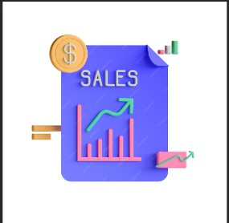

I conducted a detailed analysis of the UEFA Champions League 2023 season using python for scraping, cleaning,
analysis and visualization. This project involved examining group stage results, player statistics
and fixtures to reveal trends and insights.
In this project, i utilized Power Bi, Excel and SQL to clean and analyze the sales data. I focused on data cleaning,
visualization and trend analysis to uncover insights and assess sales performance, delivering actionable recommendations to enhance business strategies.
In this African Cup of Nations project, I leaveraged Python, Excel, Power Bi and SQL to clean and examine tournament data, including team performance, Player statistics and match outcomes.
I used SQL, Power Bi and Excel to clean and analyze data on various space missions. This involved examining mission details, launch outcomes and trends over time.

During a virtual internship, I conducted a sales analysis using Power Bi and Excel which involved cleaning and visualizing
sales data to identify trends, assess performance and provide actionable insights to optimize sales strategies.

In this project, i used SQL to explore a dataset of used cars in UK. The analysis focused on uncovering trends and patterns
related to pricing, mileage and other key factors, providing valuable insights into the used car market.

Utilizing SQL, I delved into employee dataset to uncover insights on demographics, retention rates, providing insights to support
HR strategies and improve organizational efficiency.